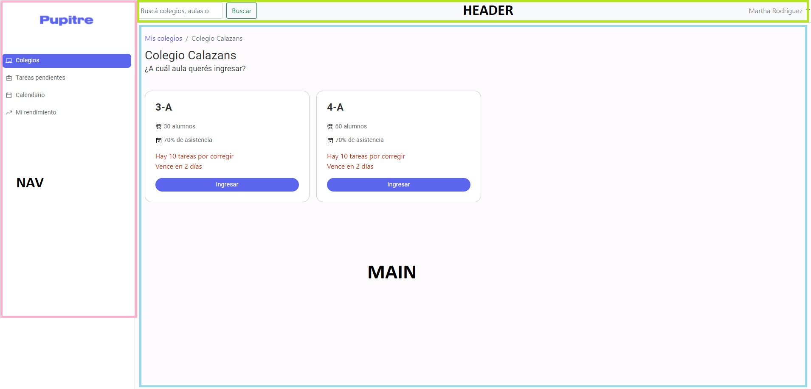
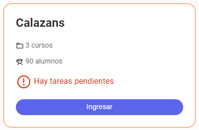
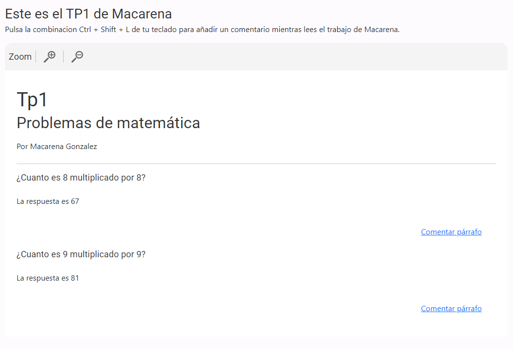

Reporte de accesibilidad
Alumnos
- Agustín Ietta
- Fiorella Nucara
- Victoria Caporalin
- Delfina Llobet
Descripción y contexto
El proyecto consta de una aplicación de escritorio para ayudar a los docentes de secundaria a optimizar sus
tiempos de corrección y organizar el material de cada alumno para poder darle un seguimiento por separado y
a su vez en conjunto.
Esta idea de aplicación surge a partir del trabajo realizado por el equipo de investigación donde analizaron
el contexto actual de la educación y detectaron ciertas causas que llevan a consecuencias claras que hacen
visible una necesidad por parte de los profesores y que indicaron el camino por el cual decidimos abordar la
problemática.
La principal causa a nivel contexto es el hecho de público conocimiento, se desarrolló en los últimos dos
años una pandemia y con ella llegaron las restricciones, en el caso que nos compete, generaron
protocolos y restringieron la presencialidad a nivel educativo, comenzando a dictar clases de forma bimodal
(a distancia y luego presencial) además de que toda esta situación comenzó a hacer notorias las
desigualdades en relación a servicio de internet, relaciones familiares, etc. Como consecuencia trajo muchas
dificultades para quienes dictaban las clases, principalmente por la inexistencia de un sistema organizado
para evaluar y calificar el desempeño de los alumnos, al no estar en contacto con los mismos se perdía esto
de entender el contexto del otro o por lo que estaba pasando, mismo lo que en la presencialidad se
denominaba como nota conceptual, en esta nueva modalidad debía poder ser reemplazada por una nota
equivalente a esto pero generada a través de trabajos prácticos.
Los docentes se enfrentan a una falta de
feedback, una pérdida de información que era necesaria al momento de evaluar a los alumnos. A su vez, el
desempeño de los chicos comenzó a ser irregular, no cumplían en tiempo y forma con los plazos de entrega,
por ende los docentes debían flexibilizarse y estar disponibles para mantener un contacto con los alumnos.
También surgió el hecho de que se les prohibía a los docentes que los alumnos repitan de curso, todo esto
implicaba que se generen múltiples instancias de repaso y trabajos prácticos para sanear esta situación.
Haciendo un análisis y sintetizando todas estas consecuencias de un momento muy particular y nuevo para la
sociedad, a nivel educación nos encontramos con un fuerte incremento en la carga horaria laboral del docente
y también del alumno. Y tomamos este dolor, para llevar al frente nuestro proyecto a partir de la siguiente
pregunta: ¿Cómo podríamos optimizar el tiempo que ocupan los docentes de secundaria en la corrección,
seguimiento y evaluación de los estudiantes en el día a día?
Teniendo como usuario a Martha de 52 años, profesora de geografía, casada, dedicada a su trabajo, interesada
por el bienestar de sus alumnos, con muchas ganas de poder trabajar de la misma forma en que lo hacía en la
presencialidad donde estaba muy acostumbrada a realizar las correcciones de forma rápida y en papel.
A partir de esta información, como equipo de diseño generamos los siguientes puntos de vista, ordenados de
acuerdo al
orden de prioridad:
- Martha es una docente que necesita optimizar el proceso de evaluación porque actualmente le está
llevando
mucho tiempo extra.
- Martha es una docente de ¨vieja escuela¨ que necesita unificar su metodología de evaluación (papel -
digital) porque actualmente las notas en papel no son suficientes y afectan su tiempo.
- Martha es una docente con mucha vocación que quiere dar un seguimiento individual a todos sus alumnos
porque le resulta esencial valorar el crecimiento de sus alumnos y que obtengan una nota de concepto.
- Marta es una docente sensible que quiere poder conocer el estado mental y emocional de sus alumnos
porque necesita que estén motivados con su materia.
A partir de todo esto es que generamos Pupitre, una aplicación para ayudar a los docentes de secundaria a
optimizar sus tiempos de corrección y organizar el material de cada alumno para poder darle seguimiento a
cada uno y a su conjunto.
Decidimos generar un Dashboard para desktop. La elección de que sea una app de escritorio tuvo que ver con
el rango etario de nuestros usuarios y su forma de relacionarse con la tecnología, la mayoría si bien
contaba con un dispositivo móvil, lo utilizaban para lo justo y necesario y a su vez manifestaban que desde
la computadora veían mejor cosa que desde el celular se les complejizaba.
Generamos entonces este dashboard con el fin de:
- Ordenar y jerarquizar la información para un uso eficiente de la misma.
- Optimizar la gestión del tiempo del docente.
- Unificar los canales de comunicación y las herramientas disponibles en un mismo medio.
- Facilitar y promover la comunicación y el feedback entre los distintos actores (docentes, alumnos,
autoridades, familia, etc.).
Como propuesta de diseño decidimos plantearnos ciertos objetivos para con el proyecto, como:
- Establecer objetivos claros y sus plazos de cumplimiento.
- Trabajar sobre metas concretas y planes de mejora.
- Conocer el propio rendimiento y evaluar los avances/retrocesos propios de cada docente.
- Contar con herramientas para optimizar los recursos.
Quisimos incorporar al diseño algún aspecto que contemple la motivación del usuario y algunas de sus
herramientas que le permitan autoevaluarse y generar un plan de trabajo que efectivamente le sirva para
mejorar
progresivamente su desempeño.
Y si bien centramos varios flujos de nuestro proyecto Pupitre, en esta decisión, por una cuestión de
capacidades
de maquetación del equipo y luego de charlarlo con el grupo docente elegimos testear y desarrollar un flujo
que
por ahí no tiene como protagonista el hecho de generar una motivación al usuario y permitirle autoevaluarse,
sino más bien trata la problemática de la corrección, el feedback y el contacto diario del docente con el
alumno.
Información necesaria para entender el resultado final
Para ver el prototipo en figma pueden
seguir este Link y ver las
diferentes iteraciones del diseño que fuimos trabajando en conjunto con el maquetado.
Para el maquetado, tuvimos que falsear el cambio de contenido con diferentes html por lo que para entender
bien el proceso, hay que seguir estos pasos:
- Entrar a cualquier colegio
- Entrar a cualquier aula
- Entrar a cualquier alumnos (siempre dirige a Macarena)
- Entrar en "Tareas"
- Entrar en el único trabajo que falta corregir
- Comentar un párrafo con la combinación de teclas o cualquier botón "Comentar párrafo"
- Enviar un comentario cualquiera
- Calificar el trabajo
Autoevaluación de accesibilidad
Hicimos una prueba con Accesibility Insights en la página más compleja del maquetado.
Tp2.html. El archivo con el reporte se puede encontrar en el zip enviado.
Problemas solucionados y no solucionados en el proceso
Nuestro pilar siempre fue la accesibilidad, por lo que la metodología de trabajo fue un paralelo entre
diseño/maquetado, siempre privilegiando la accesibilidad. Por otra parte tuvimos que lidiar con la
dificultad de la falta de conocimiento de mi parte en maquetación.
Comenzamos planteando una estructura básica de la web, respetamos el orden en que fue maquetado para tener un
punta pie del orden de lectura con un lector de pantalla. Para esto utilizamos todas las etiquetas
semánticas aprendidas. Por cuestiones de tiempo, el maquetado está apuntado a una medida de 1272*720. En
esta medida se puede ver el diseño final. En medidas más grandes no hay problemas de responsive. Pero si en
medidas más chicas. Recomendamos verlo en la medida base.

El header, lo tomamos directo de bootstrap, como sabíamos que no podiamos darle una funcionalidad al buscador
y no era el foco a testear no tocamos nada de código de esta caja. Salvo algunas diferenciaciones y
agregados que se pueden ver en el maquetado
El nav principal, si bien solo navegamos por el item colegios. Era necesario para el diseño y testeo tenes
una navegación principal para que se entienda el contexto de la web.
Comenzando con el logo, que cumple la funcion de llevar a la página principal, lo dejamos claro con un aria y
agregamos un alt.
En cuanto a la lista de items, "colegios" es el current page. Mientras que el resto de items, si bien el link
apunta a #, preferimos dejarlo así para que tenga foco y sea más real el testeo.
El main, donde transcurre todo. En cada página colocamos un h1 para encabezar el contenido y agregamos un
breadcrumb para la navegación interna de este contenido.
Tambien diseñamos una card que repetiriamos para dar consistencia a la web y reciclar el codigo

Codeamos la cards como una lista desordenada, donde cada item tendria a continuacion una etiqueta de link
para todo el contenido sea cliqueable. Por esto mismo el boton ingresar es practicamente solo una referencia
visual de que el contenido se puede cliquear.
Si bien verificamos con los profesores que esto es una buena práctica, es algo que no llegamos a completar en
un 100% ya que desde el lector de pantallas, cada item dentro de la card la toma como vínculo. No se
presentó como problema en los test, pero podría ser un punto de mejora.
En el contenido de la card, siempre codeamos una etiqueta de encabezado y cuidamos que el contenido no
dependa
del color. Por ejemplo, para la información "No hay tareas pendientes" lo dejamos bien en claro con el
texto, sumamos un color rojo que contraste y reforzamos con un ícono decorativo. Mantuvimos esta línea de
pasar contraste de color en toda la web.
El desafío
La página más compleja y el desafío de accesibilidad que planteamos es la pantalla de corrección. La ideación
de esta pantalla siempre fue en foco a que pueda ser accesible para un persona usuaria ciega.
Exploramos muchas alternativas que se nos resultaban muy complejas por la falta de conocimiento técnico y no
podíamos hacerlo accesible. Por ejemplo, seleccionar texto con el mouse y comentar o hacer click derecho en
una palabra y comentar resultaba muy complejo, mientras que, dejar un cajón con comentarios sin una relación
con el trabajo resultaba muy ineficiente.
Primeramente comenzamos con el diseño del trabajo práctico, nos encontramos con una doble jerarquia entre la
web misma y el documento que trae la web del alumno
Para esto reiniciamos los headings en la hoja que etiquetamos como un artículo, esto era esencial para la
propia lectura del documento.
Agregamos una barra de zoom al documento pensando en discapacidades visuales, pero que no desarrollamos
porque no era el foco en este testeo. Lo ocultamos al lector de pantallas.
Volviendo al desafío ideamos que la persona usuaria ciega, pudiera comentar el trabajo práctico con una
combinación de teclas. Esto llevó mucho tiempo de investigación pero pudimos lograrlo con un modal de
boostrap y una pequeña porción de código en javascript. Hicimos una combinación que no interfiera con las ya
combinaciones que usa el lector de pantalla. De esta forma, la persona usuaria podría escuchar el trabajo
del alumno y apretar la combinación en cualquier momento para hacer una corrección. Lo que nos gustaría
seguir desarrollando con quien tenga los conocimientos es poder "trackear" en qué parrafo se apretó la
combinación de teclas y que exista esa relación entre el parrafo y el comentario para la ubicación de la
caja del comentario. Esta funcionalidad le resultó muy interesante a nuestra usuaria ciega.
Por otra parte, también queriamos dar una alternativa más clásica. Y dejamos un boton de "comentar parrafo"
al final de cada párrafo con un id que haría esta función de relacionar el botón con el párrafo a corregir.
En estas instancias, tuvimos que "falsear" ese cambio de contenido en página con varios html anidados. Pero
que con un guion en los testeos funcionaban perfecto.
Para la calificación, dejamos una caja flotante fija, que acompaña el scroll del documento. Utilizamos
también un form de boostrap aprovechando su accesibilidad

Resumen de pruebas con usuarios con discapacidad
A partir del testeo, nos dimos cuenta que 4ºA, 4-A, 4to A, sonaba muy extraño desde el lector de pantallas y
hacía que nuestra usuaria se pierda. Para resolverlo agregamos un aria-label="Cuarto A"
También la usuaria nos recomendó que hagamos una descripción de los gráficos o que si no es necesario,
directamente no se lea como "gráfico" notamos que hubo frustración cuando sucedió. Por esto, manejamos el
alt de cada icono decorativo para que el lector de pantalla lo saltee.
En imágenes de los alumnos, nos pareció que no era necesario en la pantalla "alumnos" para que las personas
usuarias se concentren en el objetivo de esa pantalla, que es encontrar a los alumnos. Pero se nos ocurrió
como oportunidad que podría generar un vínculo que el lector lea una descripción propia del alumno de la
imagen que subió una vez que el docente entra a su perfil. En este caso pudimos encontrar una conexión con
la accesiblidad web y el problema docente que trabajamos desde usabilidad con el acercamiento alumno/docente
en virtualidad.
En las cards de trabajos prácticos, nuestra usuario se perdía, nos dijo que que a ella la ayudaba mucho que
un link le diga hacia donde va, por esto decidimos agregar un aria-label que diga "Ver TP 5" así la usuaria
apenas entra en la card puede saber que pasa si entra al link o seguir leyendo si lo necesita.
Código de terceros
Utilizamos bootstrap para maquetar, la decisión fue porque es el único framework que conozco y es de licencia
libre.
Conclusiones
Agustín Ietta
A nivel general de la cursada en accesibilidad, me costó. Mi foco al entrar en la diplomatura era
accesibilidad y si bien me llevo conocimientos siento que no puedo hacer nada desde mi rol de diseñador UX.
Sin embargo, creo que lo más significativo que me llevo es un cambio de mindset, que si puedo aplicar desde
como ideamos soluciones hasta el resultado final y tener en cuenta a todos los usuarios, con o sin
discapacidad. Este mindset ayuda
a que cada vez más personas se comiencen a interesar, aprender y tomarse el tiempo de desarrollar estos
temas.
Una de la usuarias, nos comento que para comprar su primer celular, tenia que fijarse que modelos tenian
accesibilidad, llevarlo a un lugar a que se lo activen, esperan días y recién ahi ir a buscarlo para poder
usarlo, mientras que hoy en día
cualquier celular tiene las opciones al alcance de cada usuario de activarlo o desactivarlo. Me contó esto
en plan, estamos avanzando a pasos agigantados. Espero con ilusión que en unos años todavía esté más
avanzado y ver el cambio.
En cuanto al trabajo final, creo que mi cursada fue especialmente diferente porque tuve que maquetar. Creo
que es algo general de toda la cursada que los maquetadores sentimos mucha presión y responsabilidad de
ponernos en la espalda el trabajo de 4 personas (y siendo el trabajo final!) y pensar: ¿qué pasa si no puedo
hacerlo? ¿qué pasa si desaprobamos?
Además la simultaneidad con usabilidad hizo que tengamos que dividirnos, y por más que nos dieramos apoyo fue
algo más separado.
Desde mi parte, teniendo solo conocimientos en html, css,
boostrap y algo de git de un curso que hice hace años. Tuve que repasar todo, aprender más cosas, revisar
todas las anteriores clases e
investigar javascript para poder realizar el maquetado del prototipo. La ayuda de Maca cada semana fue
esencial, para hacer como un check de que ibamos por buen camino, resolver dudas, tomar decisiones de
accesibilidad, etc.
Otra dificultad fue que en usabilidad la teoría terminó en wireframes en baja, nuestro diseño no tenía
lineamientos básicos de grilla, tamaños de tipografía, consistencia y esto me perjudicaba mucho porque un
componente que entraba en el diseño, en el maquetado no entraba y tenía que adaptarlo como podía.
Para terminar, yo estoy contento con los resultados. Me di cuenta que el desarrollo lejos de ser algo fijo,
siempre se puede seguir iterando como pasa en diseño. Y me tuve que poner ese mismo stop a mi mismo para no
seguir cambiando cosas. Git ayudó mucho en este punto. Por esto mismo se que tiene muchísimo para mejorar
pero
también sé que aporté todo lo que pude aportar en estas semanas y que más allá del resultado numérico, que
nuestra usuaria sonría y diga es "super accesible" en
una web que jamás usó, vale oro y con eso me quedo.
Delfina Llobet
Fiorella Nucara
A nivel general creo que a nivel general me fue dificil la materia, principalmente por no entender
nada de código, y si bien asistí a las clases de martín que me resultaron muy útiles aunque un poco
desordenadas, no podía seguirle el ritmo al nivel de código que hablaba Manuel en las clases, por ende
siempre me sentía en desventaja o frustrada por no entender del todo.
Si bien el contenido de la materia en sí fue muy enriquecedor y descubrí cosas de las cuales no tenía ni
idea, y desde lo teórico iba llevando la cursada al día siento que si hubiera tenido una base más sólida de
código hubiera aprendido o podido aprovechar la materia por demás. Lo que no quita que me haya generado una
visión mucho más inclusiva de los productos, que me permitió comenzar a pensarnos de otra forma. De hecho
fue lo que más nos limitó a la hora de diseñar nuestra app y aunque los limitantes no sean algo que me gusta
demasiado pues soy diseñadora y me hubiese encantado ponerle otro tipo de diseño al producto, entiendo que
todo este proceso me generó nuevos desafíos que me ayudan a crecer como profesional.
Con respecto a la aplicación a la que comenzamos a darle forma, si bien le falta un montón a nivel prueba de
nuevos flujos y demás, realmente creo que hay una necesidad súper válida detrás de ella y un dolor que
merece atención.
Como comentaba anteriormente el hecho de que ninguno de los integrantes del grupo este 100% capacitado para
maquetar nos limitó bastante en la decisión del flujo a testear, porque desde el minuto 0 pensábamos en la
accesibilidad de la app y como con el conocimiento de código que teníamos podíamos llevar esa propuesta
adelante.
Fue un gran desafío incorporar esta metodología de pensamiento accesible, donde era mucho más que una buena
ui lo que necesitábamos para que funcione para todo el mundo.
Le dimos muchas vueltas a la página de corrección, porque realmente ese era un gran desafío por donde se lo
mire y si bien podríamos seguir testando y sacándole mucho más jugo a las pruebas estoy contenta con el
resultado al cual llegamos porque realmente entre iteración e iteración nos íbamos dando cuenta de un montón
de cosas que surgían y que antes de pasar por esta materia jamás las hubiera visto como un problema.
Con respecto a las prácticas, me pareció super valiosa la idea de testear con personas que tuvieran alguna
discapacidad. Yo estaba
bastante nerviosa por el hecho de cómo tratarlos para que en ningún momento se sientan ofendidos por nada y
la verdad es que al momento de hacer el testeo y ver la forma en que el usuario se relacionaba con nosotros
y la buena predisposición que tenían, se me fue todo ese nervio y entendí que ellos son los primeros en
estar acostumbrados a esa situación.
Realmente los dos usuarios con los que tuvimos contacto se mostraron súper amables y predispuestos, no solo
a realizar el testeo sino a brindarnos información super valiosa y a explicarnos muchas de las situaciones a
las cuales se enfrentaban y creían que podíamos mejorar.
Haber podido realizar estos testeos creo que nos generó un gran valor agregado para terminar de comprender
todo lo que veníamos trabajando a lo largo de la cursada, e incluso seguir aprendiendo más. Notamos también
que el testeo era completamente distinto y a su vez nos hizo ponernos a pensar un montón de cosas, por
ejemplo hasta el momento estábamos súper acostumbrados a copiar la tarea en el chat del zoom y dejar que el
usuario interactue solo con ello, pero en el caso de estos dos testeos no les era tan fácil volver al chat
del zoom por el hecho de que este no era accesible por teclado y no podían ingresar a él, por eso nos
volvían a preguntar la tarea reiteradas veces, lo que también nos hizo dar cuenta de la importancia de
escribir un buen guión, pregnante para que el usuario tenga que recurrir a él lo menos posible.
Me hubiese gustado contar con instancias semanales de prácticas, es decir tener pequeños ejercicios que
podamos hacer después de cada clase para comprender y afianzar los conocimientos que íbamos viendo, ya que
después estudiar todo junto se me hizo mucho más complejo y siento que si lo hubiésemos practicado de forma
semanal lo hubiera podido asimilar de otro modo, mucho más fácil y cercano porque ya hubiese tenido cierta
experiencia con ello.
Victoria Caporalin